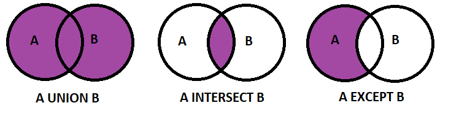

SET Operators
Set Operators SQL Server is basically used to combine the identical type of data from two or more tables. Furthermore, although more than one select statement will then be present, it will be returned only one result set. SQL Database supports three set operators, such as UNION, EXCEPT, and INTERSECT.

A set operator is a keyword in a SQL Server, that lets you combine the results set of two queries into a single query.
Sometimes once operating with SQL, you’ll have a requirement to query data from two more tables. Furthermore, but instead of joining these two tables, then you will need to list the results from both tables in a single result. That’s what set operators do.
Set Operators SQL: Four Set Operators:
There are four-set operators in SQL Server, such as union, union all, intersect, and except which allow us to combine two or more select statements.
Syntax For Set Operators SQL
SELECT [ColumnName, . . . ] FROM [TableName1] [set operator]
SELECT [ColumnName, . . .] FROM [TableName2] [set operator]
...
...
SELECT [ColumnName, . . . ] FROM [TableNameN]
1
2
3
4
5
SELECT [ColumnName, . . . ] FROM [TableName1] [set operator]
SELECT [ColumnName, . . .] FROM [TableName2] [set operator]
...
...
SELECT [ColumnName, . . . ] FROM [TableNameN]
There are the Rules on Set Operations:
The result sets of all queries should have an identical number of columns.
In every result set, the data type of every column should match the data type of its respective column within the 1st result set.
Therefore, in order to sort the result, an ORDER BY keyword should be part of the last statement.
Furthermore, the top query from records must match with the positional ordering of the bottom query from the records
The column names or aliases should be found out by the 1st select statement.